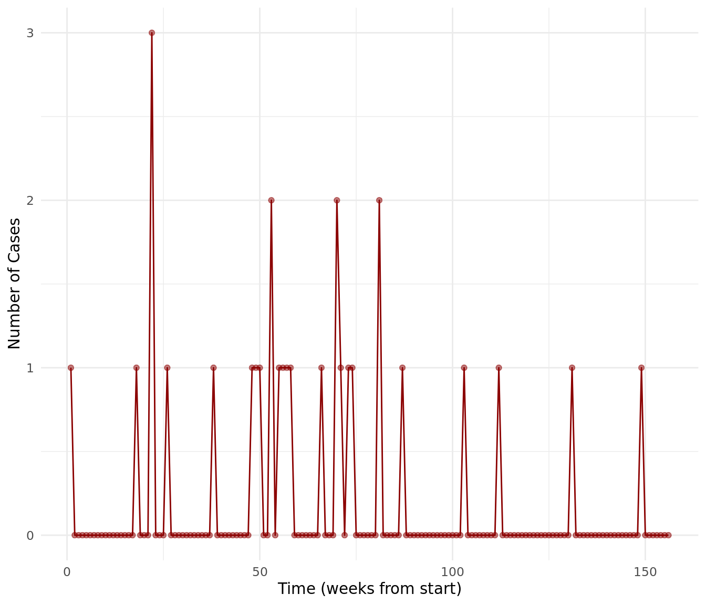
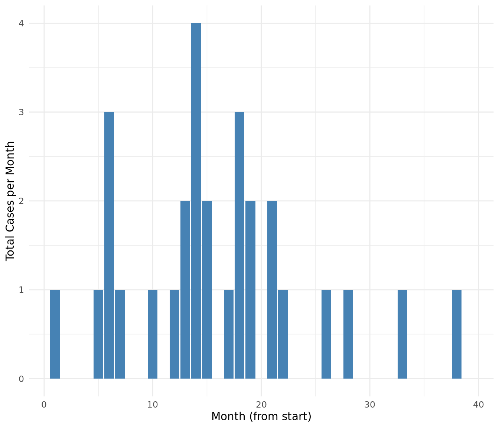

Code
library(surveillance)
library(tidyverse)
# Load the data
data("measlesDE")
# Create Hamburg-specific dataset
hamburg_measles <- data.frame(
time = 1:nrow(measlesDE@observed),
cases = measlesDE@observed[, "Hamburg"]
)This report was generated using artificial intelligence (Claude from Anthropic) under general human direction. At the time of generation, the contents have not been comprehensively reviewed by a human analyst.
This report analyzes measles surveillance data for Hamburg, Germany, using data from the surveillance package in R. The analysis focuses on temporal patterns and outbreak characteristics to inform public health monitoring and response strategies.
library(surveillance)
library(tidyverse)
# Load the data
data("measlesDE")
# Create Hamburg-specific dataset
hamburg_measles <- data.frame(
time = 1:nrow(measlesDE@observed),
cases = measlesDE@observed[, "Hamburg"]
)The dataset covers 156 weeks of surveillance in Hamburg. Here are the key metrics:
summary_stats <- data.frame(
Total_Cases = sum(hamburg_measles$cases),
Mean_Cases_Per_Week = mean(hamburg_measles$cases),
Max_Cases = max(hamburg_measles$cases),
Weeks_With_Cases = sum(hamburg_measles$cases > 0)
)
knitr::kable(summary_stats,
caption = "Summary Statistics for Hamburg Measles Cases",
digits = 2)| Total_Cases | Mean_Cases_Per_Week | Max_Cases | Weeks_With_Cases |
|---|---|---|---|
| 29 | 0.19 | 3 | 24 |
The following visualization shows the weekly pattern of measles cases in Hamburg:
ggplot(hamburg_measles, aes(x = time, y = cases)) +
geom_line(color = "darkred") +
geom_point(color = "darkred", alpha = 0.5) +
theme_minimal() +
labs(x = "Time (weeks from start)",
y = "Number of Cases") +
theme(plot.title = element_text(hjust = 0.5))
To better understand the clustering of cases, we aggregate the data monthly:
# Create monthly aggregation
hamburg_measles$month <- cut(hamburg_measles$time,
breaks = seq(0, 156, by = 4),
labels = 1:39)
monthly_cases <- hamburg_measles %>%
group_by(month) %>%
summarize(total_cases = sum(cases))
ggplot(monthly_cases, aes(x = as.numeric(month), y = total_cases)) +
geom_bar(stat = "identity", fill = "steelblue") +
theme_minimal() +
labs(x = "Month (from start)",
y = "Total Cases per Month") +
theme(plot.title = element_text(hjust = 0.5))
The data suggests several important implications for public health monitoring and response:
Sporadic Nature: The sporadic pattern of cases suggests that Hamburg has generally good measles control, with no sustained transmission.
Cluster Response: When cases do occur, they tend to appear in small clusters, indicating potential for targeted intervention strategies.
Surveillance Effectiveness: The ability to detect single cases suggests a sensitive surveillance system.
This analysis was performed using R version 4.4.1 with the surveillance package. The data represents weekly measles case counts for Hamburg, Germany, as provided in the measlesDE dataset.